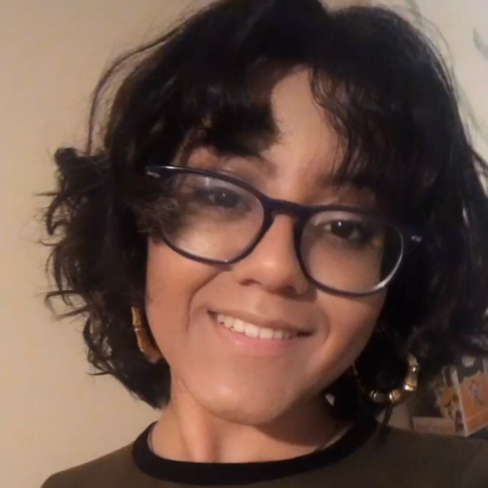

an artist

a programmer
H U M A N
.about_me{
name: Sayra "Sy" Solis;
age: 21;
pronouns: she-her;
location: Brooklyn-NY;
}
I was given the name Sayra Solis by my immigrant parents. I was born and raised in Brooklyn, moving and being displaced from Williamsburg, Bedstuy, Buswhick and East New York.
I am passionate about art, computers, the internet and the digital power. My passion for the digital and emerging media started in highschool when I first held a camera. Now as a college senior a semester away from graduating, I have grown to understand the immense power we have at our fingertips.
I've worked as a photographer, videographer, teacher assitant and even a college transition coach. In all positions I've learned that people have a message that they need to share, one that defines them and what they represent. My goal is to help people who's voices are not heard to be HEARD, to be SEEN, to be ACKNOWLEDGED.
an artist
a programmer
a photographer
a videographer